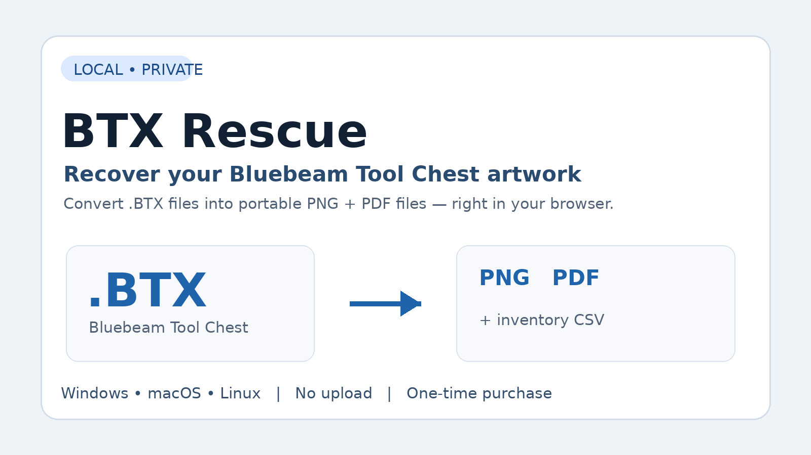
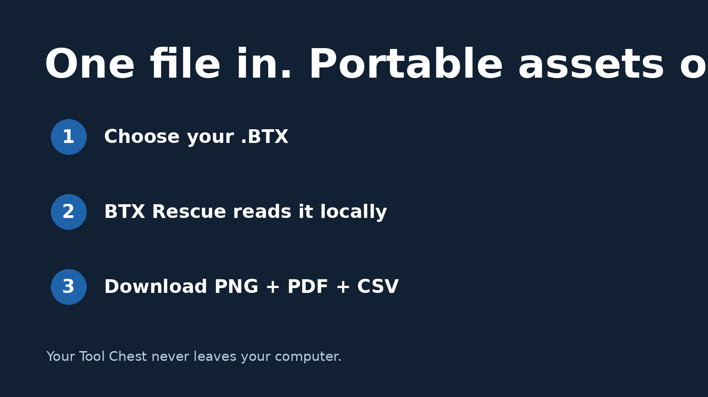

Recover your Bluebeam Tool Chest artwork from .BTX files.
BTX Rescue converts Bluebeam Tool Chest files into portable PNG and PDF assets plus a searchable CSV inventory. Processing happens locally in your browser — your files are not uploaded anywhere.

Recover useful artwork
Extract reusable PNG and PDF versions of tool artwork from supported .BTX files.
Inventory what you have
Generate inventory.csv with tool names, labels, types and resource details.
Keep files private
Everything runs locally in a modern desktop browser. No cloud upload is required.
Cross-platform
Use BTX Rescue on Windows, macOS or Linux with a current desktop browser.

Frequently asked questions
What is a .BTX file?
A .BTX file is a Bluebeam Revu Tool Chest export. It can contain custom markups, symbols and related resource data.
Does BTX Rescue upload my files?
No. Processing happens locally in the browser.
What do I get?
A downloadable ZIP containing recovered PNGs, PDFs and an inventory CSV for supported tools.
Is Bluebeam required?
No Bluebeam installation is required to run BTX Rescue itself.
Will every BTX reconstruct perfectly?
No utility can guarantee perfect reconstruction of every unusual, damaged, encrypted or unsupported annotation type. BTX Rescue reports items it cannot reconstruct instead of silently claiming success.